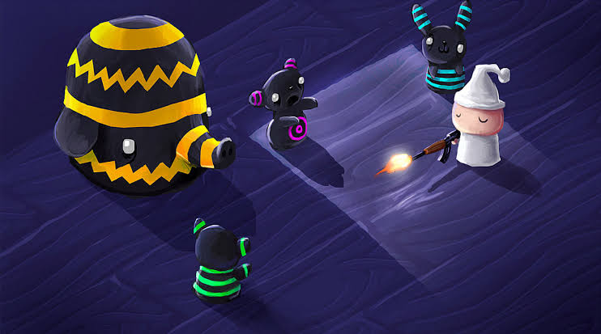

Survival Shooter

Sobre el proyecto
Shooter de supervivencia donde el jugador se mueve y apunta mientras combate enemigos que lo persiguen. Incluye gestión de vida, puntuación y fin de partida.
Mecánicas que he aprendido
- Controlar el movimiento del jugador con teclado y apuntar con el ratón.
- Implementar disparos con raycast, efectos y detección de enemigos.
- Usar NavMeshAgent para perseguir al jugador y generar enemigos aleatoriamente.
- Gestionar vida, puntuación, feedback visual de daño y reinicio de partida.
Problemas y soluciones
- Los enemigos necesitaban perseguir al jugador por el escenario: utilicé NavMeshAgent para que pudieran desplazarse por las zonas navegables.
- Los disparos debían detectar objetivos con precisión: implementé raycasts para comprobar impactos y activar los efectos correspondientes.
- La partida necesitaba una progresión clara: incorporé vida y puntuación, además de feedback de daño y una opción para reiniciar al terminar.